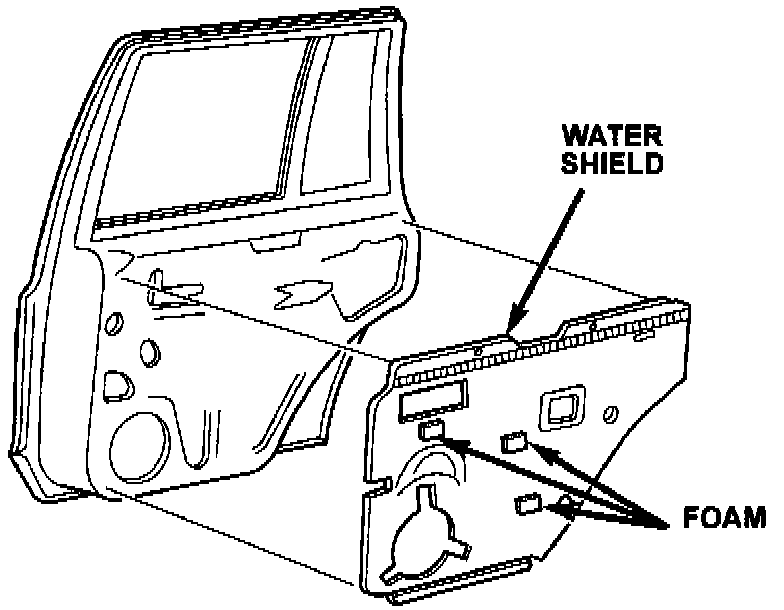

Rear Door Speaker - Buzz
NO: 23-35-97 Rev. AGROUP: Electrical
DATE: Jul. 11, 1997
SUBJECT:
Rear Door Speaker Buzz
THIS BULLETIN SUPERSEDES TECHNICAL SERVICE BULLETIN NUMBER 23-35-97 DATED JUNE 6, 1997, WHICH SHOULD BE REMOVED FROM YOUR FILES. THE LABOR OPERATION NUMBER HAS BEEN REVISED AND IS HIGHLIGHTED WITH ASTERISKS.
MODELS:
1996 - 1997 (ZJ) Grand Cherokee
1996 - 1997 (ZG) Grand Cherokee (International Markets)
SYMPTOM/CONDITION:
Complaints may be received related to speaker buzz at the rear door speakers. This may be a buzz related to the door trim panel or water shield rather than the speakers themselves.
DIAGNOSIS:
Tune the radio to a station that contains music with a lot of bass. Adjust the radio to the max bass position with the volume up and listen for the buzz. If the buzz is present, apply hand pressure to the door trim panel plastic screw covers. If the noise is eliminated, the screw covers may be loose. This can be repaired by removing the covers and inserting a small piece of foam inside the cover and installing the cover. If the buzz is located at the lower trim panel near the speaker, the cause may be the water shield vibrating against the trim panel. Foam can be applied to the water shield or sound deadener to correct this condition. Refer to the Repair Procedure for instructions.
PARTS REQUIRED:
AR 04318028 Vinyl Foam Tape
REPAIR PROCEDURE:
This bulletin involves installing foam tape to the door trim panel.
1. If the trim screws covers are loose as described above, remove the covers and install a small piece of foam inside the cover and install them. This will apply pressure between the screw and the cover to correct the condition.

2. If the noise is located at the trim panel near the speaker, remove the door trim panel. Inspect the water shield and sound deadening pad. Make sure they are installed properly and secured to the inner door. Make any repairs necessary. Install 5 layers of the vinyl foam (p/n 04318028) approximately 2 inches long to water shield or sound deadening pad in the three locations shown in Figure 1. This will apply pressure to the water shield to prevent any unwanted vibration.
POLICY: Reimbursable within the provisions of the warranty.
TIME ALLOWANCE:
Labor Operation No:
Install Foam Under Trim Screws
23-20-22-99 0.2 Hrs.
Remove Door Trim and Install Foam Tape
23-20-23-90 0.3 Hrs.
Install Foam Under Trim Screws and Remove Door Trim and
Install Foam Tape
23-20-22-91 0.3 Hrs.
FAILURE CODE: XX - Service Adjustment